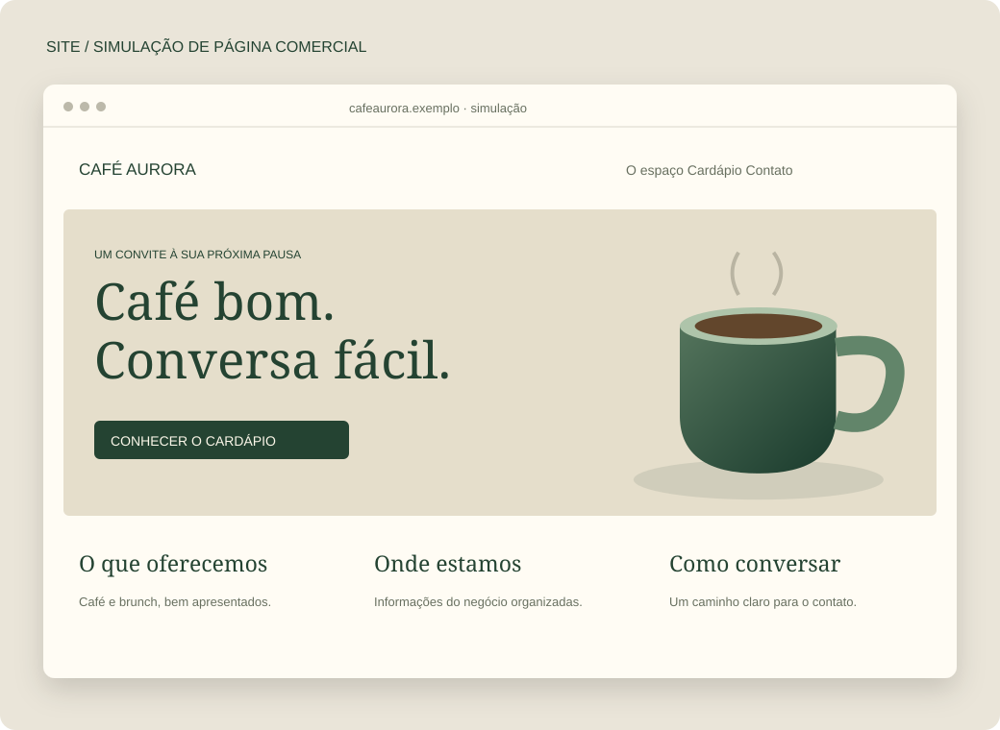
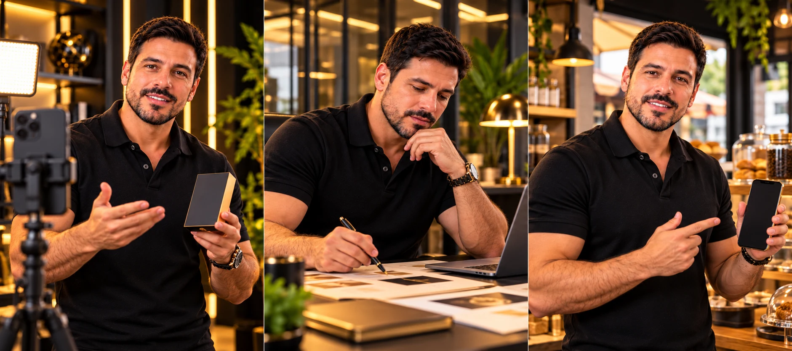
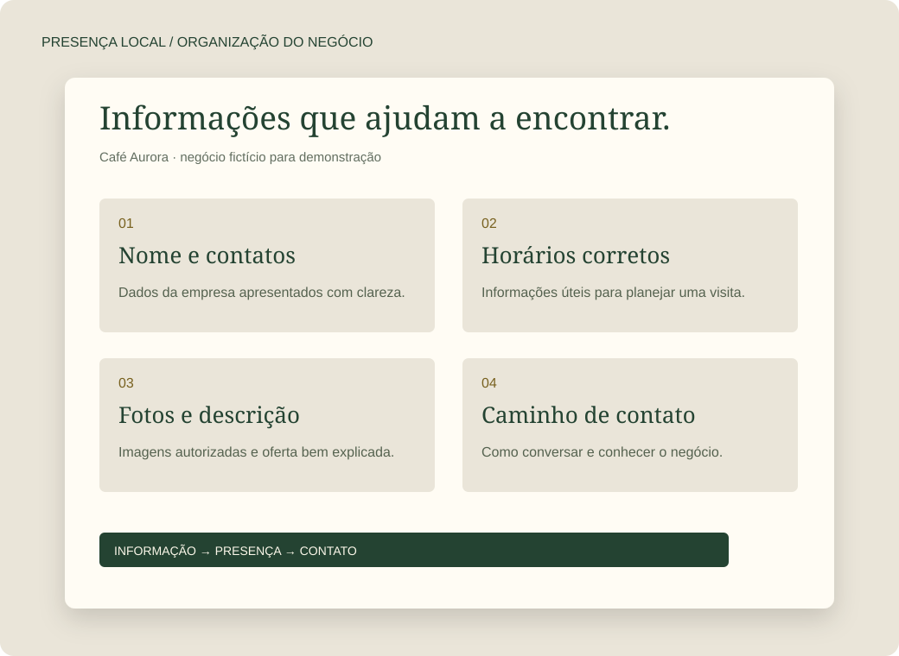

Ser encontrado
Informações claras nos canais em que faz sentido estar.
ALPHA DIGITAL 360° · MANGARATIBA E COSTA VERDE
Ele encontra sua empresa, entende o que você oferece e consegue falar com você?
Ajudamos pequenos negócios a organizar sua presença, explicar seus serviços e divulgar suas ofertas. Com planejamento, criação e um trabalho que você entende antes de contratar.
Quero olhar para o meu negócioConversa inicial gratuita, por agendamento.
Presença local com atendimento também a negócios de outras regiões.
UMA SITUAÇÃO COMUM NA NOSSA REGIÃO
Uma família procura uma pousada para o fim de semana. Uma pessoa busca uma clínica. Um morador precisa de uma loja ou de alguém para resolver um serviço.
Eles olham fotos, leem informações e tentam entender se aquela empresa pode atender. Horários desatualizados, serviços mal explicados ou um contato difícil podem atrapalhar essa escolha.
A Alpha cuida dessa apresentação com você: organiza as informações, cria os materiais e planeja a divulgação. Cada trabalho tem uma função no caminho entre a procura e o contato.
Informações claras nos canais em que faz sentido estar.
Uma oferta explicada com imagens, textos e exemplos.
Um próximo passo visível para quem quer saber mais.
SEIS FRENTES DE TRABALHO
Você reconhece a dificuldade. Nós explicamos como cada entrega pode ajudar. Podemos começar por uma necessidade específica.

O cliente pergunta, mas as informações estão espalhadas.
Reunimos a apresentação da empresa, os serviços e as formas de contato em um site que funciona no celular.
Quem chega encontra uma explicação organizada e pode conversar com mais contexto.
Imagine no seu negócio: Uma clínica apresenta seus atendimentos, orientações de contato e informações da equipe em um só lugar.
Conteúdo, revisões, hospedagem e domínio são definidos na proposta.
Você envia as mesmas fotos e descrições em várias conversas.
Organizamos produtos ou serviços em uma vitrine com imagens, descrições e um caminho para tirar dúvidas.
O cliente consulta as opções antes de falar com você; a conversa pode começar mais adiantada.
Imagine no seu negócio: Uma loja mostra linhas de produtos e características em um catálogo fácil de compartilhar.
Quantidade de itens e atualizações são combinadas. Não inclui automaticamente pagamento ou estoque.

Sua oferta é boa, mas uma imagem sozinha não explica tudo.
Criamos um comercial com linguagem de vídeo de criador: roteiro, apresentação e edição. A pessoa que apresenta pode ser criada digitalmente.
O vídeo pode mostrar o que você oferece e explicar por que vale conhecer, em uma linguagem próxima à das redes.
Imagine no seu negócio: Uma pousada apresenta sua proposta de hospedagem em um vídeo curto. Fotos, condições e informações precisam ser verdadeiras e autorizadas.
UGC descreve a linguagem do comercial. Não é depoimento de cliente. O exemplo visual é estático; não há vídeo finalizado disponível nesta versão.
Seu perfil é atualizado quando sobra tempo e não mostra tudo o que você faz.
Planejamos os assuntos e criamos textos e peças. Publicação e acompanhamento entram conforme o trabalho contratado.
Sua comunicação ganha continuidade e ajuda a esclarecer dúvidas sobre seus serviços.
Imagine no seu negócio: Um profissional autônomo alterna explicações do trabalho, dúvidas frequentes e apresentação dos serviços.
Frequência, canais e responsabilidades ficam definidos. Atendimento em mensagens não entra automaticamente.

Você quer divulgar uma oferta, mas não sabe como planejar a campanha.
Definimos objetivo, público, materiais e destino dos anúncios; a gestão acompanha os dados disponíveis durante o período contratado.
Sua divulgação tem uma direção e pode ser ajustada com base no que for observado.
Imagine no seu negócio: Um comércio divulga uma oferta para uma região definida e acompanha os contatos que consegue identificar.
A verba paga às plataformas é separada da gestão. Nenhuma campanha garante vendas.
Quem procura na região encontra informações incompletas ou desatualizadas.
Organizamos informações, fotos e contato nos pontos de presença combinados, incluindo o Perfil da Empresa no Google quando elegível.
Fica mais fácil entender o que você faz, onde atende e como falar com sua empresa.
Imagine no seu negócio: Uma prestadora de serviços apresenta a área atendida, os horários e o contato de forma coerente nos canais escolhidos.
Verificação e elegibilidade seguem as regras do Google. Não há promessa de posição nas buscas.
VEJA O TIPO DE MATERIAL
Demonstrações ajudam a visualizar uma entrega. São diferentes de um projeto de cliente, de um depoimento ou de um resultado comprovado.
DA INTENÇÃO À PEÇA
Um post pode apresentar seu serviço. Um catálogo organiza as opções. Um comercial pode explicar uma oferta. A criação começa pelo que o cliente precisa entender.
Comparação de situações ilustrativas. Não representa antes/depois medido de um cliente. Projetos reais só entram no portfólio com material e autorização confirmados.
Quero uma apresentação para meu negócioCOMO COMEÇAMOS
Entendemos o que você oferece, quem atende e o que precisa melhorar.
Você conhece entregas, limites, materiais, prazo, investimento e custos externos.
Após sua aprovação, executamos o combinado e revisamos a entrega com você.
ANTES DE PEDIR UM ORÇAMENTO
Conte o problema com suas palavras. A escolha do serviço vem depois de entender a necessidade.
Não. Uma empresa pode começar pelo perfil local; outra, por um catálogo ou uma campanha. A proposta define o trabalho que faz sentido para a necessidade apresentada.
O investimento depende da entrega, da quantidade de materiais e do acompanhamento necessário. Você recebe a proposta antes de contratar, com escopo, revisões, prazos e custos externos. A conversa inicial é gratuita, mediante agendamento.
Não garantimos vendas, faturamento ou posição nas buscas. Oferta, mercado, investimento e atendimento influenciam o resultado. Nosso trabalho tem entregas e objetivos definidos, sem prometer o que não podemos controlar.
É publicidade com linguagem de vídeo de criador: uma pessoa apresenta uma oferta de forma próxima. A pessoa pode ser criada digitalmente com IA. Não é um depoimento de cliente. Os quadros mostrados nesta página são estáticos; não são vídeos finalizados.
Não automaticamente. A gestão, a criação dos materiais e o valor pago às plataformas são itens distintos. A proposta informa o que está incluído.
As cenas do personagem e as interfaces estão identificadas como demonstrações. A peça da Alpha é comunicação da própria agência. Não apresentamos essas imagens como clientes atendidos, avaliações ou resultados medidos.
A comunicação desta página dá atenção aos pequenos negócios da região. Também podemos avaliar projetos de outras localidades com alinhamento remoto.
VAMOS CONVERSAR SOBRE SUA EMPRESA
Conte o que você faz e o que hoje dificulta sua divulgação. Não precisa chegar com uma lista de serviços pronta.
Conversa inicial gratuita, por agendamento e disponibilidade real. Sem obrigação de contratar.
O texto é preparado apenas nesta página. Ao abrir o contato, você usa o WhatsApp e decide se envia. Não inclua dados sensíveis.